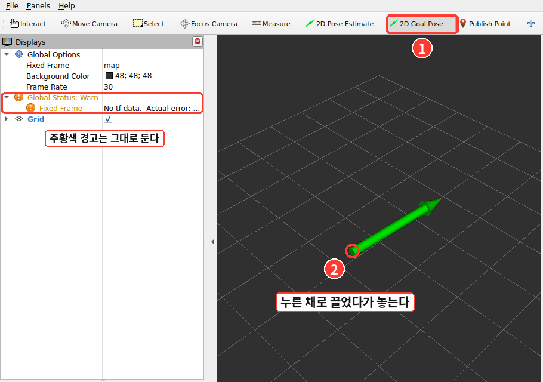
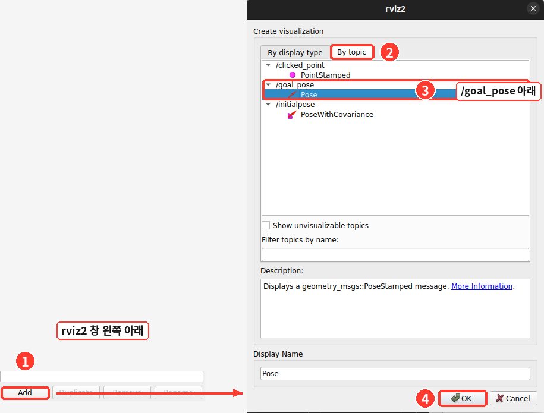
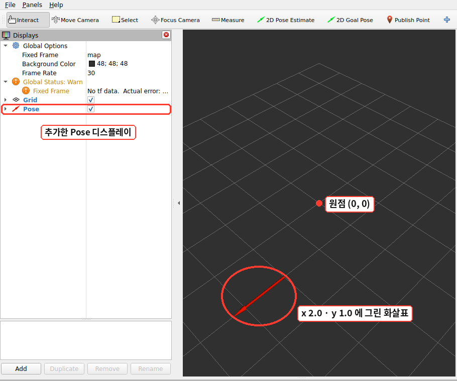

ROS 2 토픽 명령어로 rviz2와 메시지 주고받기
📅 제출 마감 — 2026년 11월 22일 (일) 23:59
- 처음 보는 토픽에 메시지를 보내려면 무엇부터 차례로 쳐 봐야 할까요?
ros2 interface show의 들여쓰기는ros2 topic pub에 적는 중괄호와 어떻게 이어질까요?- 노드 하나가 같은 토픽을 보내기도 하고 받기도 할 수 있을까요?
왜 이걸 하나요
ROS 명령어 수업에서는 turtlesim으로 명령어를 하나씩 쳐 봤습니다. 그때는 토픽 이름도 타입도 자료에 미리 적혀 있었습니다. 그런데 실제로 로봇을 다루다 보면 이름도 타입도 모르는 토픽을 자주 만납니다.
그럴 때 쓰는 순서는 늘 같습니다. 목록에서 이름과 타입을 찾고 → 그 타입의 구조를 보고 → 받아 보고 → 보내 봅니다. 이번 과제는 turtlesim이 아닌 다른 프로그램, rviz2를 상대로 이 순서를 혼자 한 바퀴 돌아 보는 것입니다.
node list · topic list -t ·
interface show · topic echo · topic pub · topic info -v만 씁니다.
다음 과제에서는 이 토픽들을 코드로 주고받게 되는데, 그 전에 터미널에서 한 번 손에 익혀 두면 덜 헤맵니다.
시작하기 전에
🆕 rviz2 — ROS 데이터를 그림으로 보여 주는 프로그램
rviz2는 토픽으로 오가는 위치·라이다 점·지도 같은 것을 3차원 화면에 그려 주는 ROS 2 기본 도구입니다.
16회에 설치한 ros-jazzy-desktop에 이미 들어 있습니다. 제대로 쓰는 법은 22회에서 다룹니다.
이번 과제에서는 버튼 하나(2D Goal Pose)와 Add 버튼 하나만 씁니다.
rviz2는 이 과제에서 두 가지 역할을 합니다. 화면을 누르면 토픽으로 메시지를 보내고, 토픽으로 메시지가 오면 화면에 화살표로 그립니다.
터미널을 세 개 엽니다. 이 과제가 끝날 때까지 셋 다 닫지 않습니다.
| 터미널 | 무엇을 띄워 두나 |
|---|---|
| 1 | rviz2 — 창이 뜨면 이 터미널은 그대로 둡니다 |
| 2 | 목록·구조를 본 뒤 ros2 topic echo를 계속 켜 둡니다 |
| 3 | ros2 topic pub · ros2 topic info를 칩니다 |
Global Status: Warn과 No tf data가 보입니다.
이 과제에서는 그대로 두어도 됩니다. 좌표계를 서로 이어 주는 TF는 26회에서 다룹니다.
작업 A — 받기 (rviz2 → 터미널)
| # | 터미널 | 무엇을 합니다 |
|---|---|---|
| ① | 1 | rviz2를 칩니다. 격자가 깔린 창이 뜹니다 |
| ② | 2 | ros2 node list — rviz2가 어떤 이름의 노드로 떠 있나 봅니다 |
| ③ | 2 | ros2 topic list -t — 목록에서 /goal_pose와 그 옆 대괄호 안의 타입을 찾습니다 |
| ④ | 2 | ros2 interface show (③에서 찾은 타입) — 이 타입의 메시지에 어떤 필드가 들어 있나 봅니다 |
| ⑤ | 2 | ros2 topic echo /goal_pose를 칩니다. 아무것도 안 나옵니다. 끄지 말고 그대로 둡니다 |
| ⑥ | rviz2 | 위쪽 도구 막대의 2D Goal Pose를 누르고, 격자 위에서 마우스를 누른 채 한쪽으로 끌었다가 놓습니다. 두 번, 자리와 방향을 바꿔서 합니다. 터미널 2에 메시지가 하나씩 찍힙니다 |

③의 목록에 /goal_pose가 있다는 것은 누군가 그 이름으로 보내겠다고 해 둔 것일 뿐입니다
(ROS 명령어 자료 ③절).
메시지가 실제로 나가는 때는 ⑥에서 버튼으로 화면을 찍는 순간입니다.
🆕 ⑥의 출력에서 처음 보는 것
frame_id: map- 이 위치가 어느 좌표계 기준인지를 적은 이름입니다(17회
header.frame_id). rviz2 왼쪽 위Fixed Frame칸의 값이map이라서 그 이름이 들어갑니다. orientation의x·y·z·w- 화살표가 어느 방향을 보는지를 네 개의 숫자로 적은 것입니다(쿼터니언이라고 합니다).
이 수업에서는 계산하지 않습니다. 작업 B에서 받은 값을 그대로 옮겨 쓰기만 합니다.
④의 출력에서
w옆에만1이 붙어 있는데, 이것이 적지 않았을 때 들어가는 기본값입니다. 그래서 작업 B-②처럼orientation을 안 적고 보내면w=1.0(돌지 않은 방향)이 들어갑니다.
작업 B — 보내기 (터미널 → rviz2)
이번에는 거꾸로, 터미널에서 /goal_pose로 메시지를 보내 rviz2 화면에 화살표를 띄웁니다. 터미널 2의 echo는 켜 둔 채로 합니다.
| # | 터미널 | 무엇을 합니다 |
|---|---|---|
| ① | rviz2 | 왼쪽 아래 Add → 위쪽 By topic 탭 → /goal_pose 아래의 Pose → OK.
왼쪽 목록에 Pose가 생깁니다. 이제 rviz2가 /goal_pose를 받아서 그립니다 |
| ② | 3 | 표 아래의 명령을 그대로 칩니다. rviz2에 빨간 화살표가 나타나면 rviz2 창을 그림으로 남깁니다 |
| ③ | 3 | 내 값으로 보냅니다. position의 x · y는 여러분이 정하고(②와 다른 값),
orientation에는 작업 A-⑥에서 받은 메시지 하나의 x · y · z · w를 그대로 옮겨 넣습니다.
화살표가 그때 끌었던 방향을 향하면 됩니다. rviz2 창을 그림으로 남깁니다 |
| ④ | 3 | ros2 topic info /goal_pose -v — 지금 이 토픽을 누가 보내고 누가 받는지 봅니다 |

/goal_pose 아래의 Pose → ④ OK.
By topic 탭에는 지금 있는 토픽 중 rviz2가 그릴 수 있는 것만 나옵니다.②에서 칠 명령:
ros2 topic pub --once /goal_pose geometry_msgs/msg/PoseStamped '{header: {frame_id: map}, pose: {position: {x: 2.0, y: 1.0}}}'
orientation을 안 적었으므로 화살표는 x축 방향을 봅니다.
②와 ③에서 이 창을 그림으로 남겨 보고서에 붙입니다.header: {frame_id: map}을 빼면 화살표가 안 바뀝니다 — 오류도 안 납니다
터미널에는 publishing #1:이 정상으로 찍히고, 메시지도 분명히 나갑니다.
그런데 rviz2는 어느 좌표계 기준인지 적혀 있지 않은 위치를 그리지 않고 넘깁니다.
③에서 화살표가 그대로라면 frame_id부터 확인해 보세요.
interface show 출력을 보고 적습니다.
들여 쓴 줄이 한 겹 안쪽이면 중괄호도 한 겹 안쪽입니다(ROS 명령어 자료 ⑥절).
Failed to populate field가 나오면 필드 이름이나 감싸는 자리가 다른 것입니다.
②를 보내면 터미널 2의 echo에도 같은 메시지가 찍힙니다. 받는 쪽이 둘이라서 그렇습니다.
AI와의 대화 요약
명령이 무슨 뜻인지, 출력의 어느 줄을 봐야 하는지 막히면 AI에게 물어봐도 됩니다. 그 대화는 다른 과제처럼 요약해서 보고서 맨 뒤(C절)에 붙입니다. 세션을 닫기 전에 아래 글을 그대로 보내고, 출력을 고치지 않고 그대로 붙여 넣습니다. 세션을 여러 번 열었으면 세션마다 받아 이어 붙입니다.
이 세션을 끝내기 전에 지금까지의 대화를 아래 규칙대로 정리해 줘.
- 내가 보낸 메시지는 요약하지 말고 순서대로 원문 그대로 적어. 한 글자도 바꾸지 마.
- 네 대답은 중간 과정(탐색·시도·되묻기)을 빼고, 그 질문에 실제로 알려 준 것만 두세 줄로 요약해.
네가 직접 실행한 명령이 있으면 그 명령을 그대로 적어.
- 대화 순서대로 번호를 붙여 아래 형식으로 써. 이 형식 밖의 말은 붙이지 마.
### 1
**나:** (원문 그대로)
**AI:** (알려 준 것 · 실행한 명령 요약)
### 2
**나:** …
**AI:** …제출 양식
아래 「복사」 버튼을 누르면 양식이 통째로 복사됩니다. 보고서에 붙여 넣고 빈 칸을 채우면 됩니다.
칸 안에는 친 명령과 화면에 나온 것을 통째로 붙여 넣습니다. 고르거나 다듬지 마세요. 그림은 rviz2 창 두 장뿐입니다. 괄호 안 안내 글은 지웁니다.
# HW4 제출 — 이름 ______ 학번 ______
## A. 받기 (rviz2 → 터미널)
### A-1. 노드와 토픽 목록 (지시 ②③)
```
여기에 친 명령과 화면에 나온 것을 그대로 붙여 넣습니다
```
### A-2. 메시지 구조 (지시 ④)
```
```
### A-3. rviz2가 보낸 메시지 두 개 (지시 ⑤⑥)
```
```
## B. 보내기 (터미널 → rviz2)
### B-1. 터미널에서 보내기 (지시 ②)
```
```
여기에 화살표가 보이는 rviz2 창 그림을 붙입니다
**pub 명령에서 position 을 pose: {…} 안에 넣은 이유 — A-2 출력의 어디를 보고 알았는지 한 줄:**
### B-2. 내 값으로 보내기 (지시 ③)
```
```
여기에 화살표가 보이는 rviz2 창 그림을 붙입니다
### B-3. 누가 보내고 누가 받나 (지시 ④)
```
```
**Publisher 와 Subscription 이 각각 어느 노드인지 한 줄:**
## C. AI와의 대화 요약
(세션을 끝내기 전에 「AI와의 대화 요약」의 프롬프트를 보내고, 받은 출력을 고치지 않고 그대로 붙입니다. 세션이 여럿이면 이어 붙입니다.
AI를 쓰지 않았으면 그렇게 적고, 막혔을 때 무엇을 보고 풀었는지 두 줄)
### 1
**나:**
**AI:**
제출 방법과 점수
채운 보고서를 PDF 한 개로 만들어 LMS에 올립니다.
파일 이름은 HW4_이름_학번.pdf로,
HW4_홍길동_20251234.pdf처럼 자기 이름과 학번을 넣으면 됩니다.
| 무엇 | 점수 | 어떻게 봅니다 |
|---|---|---|
| 제출 | 10점 | 기한 안에 냈으면 받습니다 |
| 보고서 | 25점 | 양식의 칸이 채워져 있는지, 한 줄 답 두 개가 맞는 방향인지, AI와의 대화 요약이 붙어 있는지를 봅니다 |
| 확인 퀴즈 | 15점 | 제출 후 다음 수업 시간에 짧게 봅니다. 객관식이고 정답은 그 자리에서 공개합니다 |
| 합계 | 50점 |